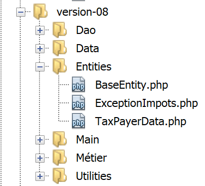
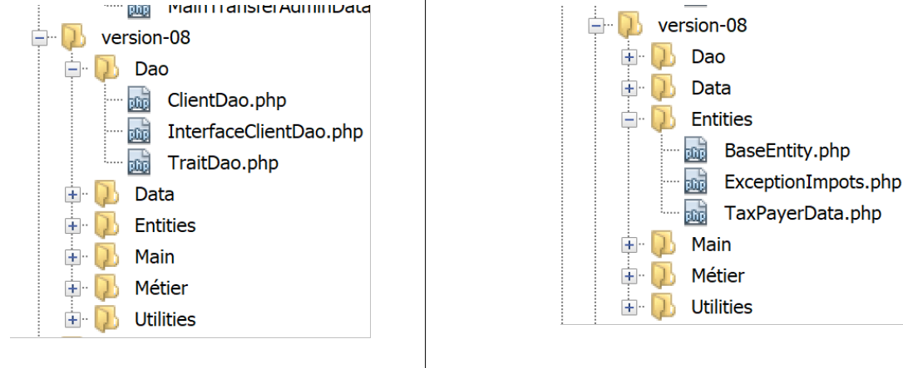
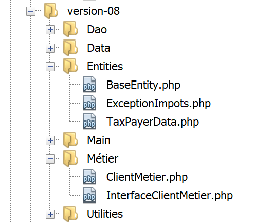
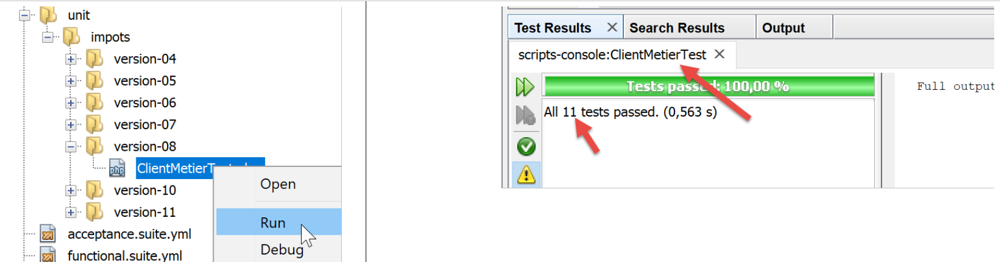

18. Exercício prático – versão 8
Vamos retomar a aplicação de exemplo – versão 5 (parágrafo com o link) e transformá-la numa aplicação cliente/servidor.
18.1. Introduction
A arquitetura da versão 5 era a seguinte:

- a camada denominada [dao] (Data Access Objects) encarrega-se das interações com a base de dados MySQL e com o sistema de ficheiros local;
- a camada denominada [métier] efetua o cálculo do imposto;
- o script principal é o «maestro»: instancia as camadas [dao] e [métier] e, em seguida, comunica com a camada [métier] para realizar as tarefas necessárias;
Vamos migrar esta arquitetura para a seguinte arquitetura cliente/servidor:

- No [2], iremos recuperar a camada [dao] da versão 5, removendo-lhe os métodos de acesso ao sistema de ficheiros local. Estes métodos serão migrados para a camada [dao] do cliente [6, 7];
- na [3], a camada [métier] permanecerá a da versão 5 sem os seus métodos [executeBatchImpôts, saveResults], que serão migrados para a camada [dao] [7] do cliente;
- em [4], o script do servidor deve ser escrito: terá de:
- criar as camadas [métier], [dao] e [3, 2];
- comunicar-se com o script do cliente [5, 7];
- em [7], a camada [dao] do cliente deve ser escrita:
- esta será um cliente HTTP do script do servidor [4, 5];
- esta irá adotar os métodos de acesso ao sistema de ficheiros local da camada [dao] da versão 5;
- em [8], a camada [métier] do cliente respeitará a interface [InterfaceMetier] da versão 5. A sua implementação será, no entanto, diferente. Na versão 5, a camada [métier] efetuava o cálculo do imposto. Aqui, é a camada [métier] do servidor que efetua esse cálculo. A camada [métier] irá, portanto, recorrer às camadas [dao] e [7] para comunicar com o servidor e solicitar-lhe que calcule o imposto;
- em [9], o script da consola terá de instanciar as camadas [dao, métier] do cliente e iniciar a sua execução;
18.2. O servidor
Estamos interessados na parte do servidor da aplicação.

Esta arquitetura será implementada pelos seguintes scripts:

18.2.1. As entidades trocadas entre as camadas

As entidades trocadas entre as camadas são as da versão 5 descritas no parágrafo «ligação».
18.2.2. A camada [dao]

A camada [dao] implementa a seguinte interface [InterfaceServerDao]:
<?php
// espaço de nomes
namespace Application;
interface InterfaceServerDao {
// Leitura dos dados da administração fiscal
public function getTaxAdminData(): TaxAdminData;
}
- linha 9: o método [getTaxAdminData] recupera os dados da administração fiscal de uma base de dados;
A interface [InterfaceServerDao] é implementada pela seguinte classe [ServerDao]:
<?php
// espaço de nomes
namespace Application;
// Definição de uma classe ImpotsWithDataInDatabase
class ServerDao implements InterfaceServerDao {
// o objeto do tipo TaxAdminData que contém os dados das faixas de imposto
private $taxAdminData;
// o objeto do tipo [Database] que contém as características do BD
private $database;
// fabricante
public function __construct(string $databaseFilename) {
// armazena-se a configuração JSON da base de dados
$this->database = (new Database())->setFromJsonFile($databaseFilename);
// prepara-se o atributo
$this->taxAdminData = new TaxAdminData();
try {
// abre-se a ligação à base de dados
$connexion = new \PDO($this->database->getDsn(), $this->database->getId(), $this->database->getPwd());
// pretende-se que, sempre que ocorrer um erro em SGBD, seja lançada uma exceção
$connexion->setAttribute(\PDO::ATTR_ERRMODE, \PDO::ERRMODE_EXCEPTION);
// inicia-se uma transação
$connexion->beginTransaction();
// preenche-se a tabela de escalões de imposto
$this->getTranches($connexion);
// preenche-se a tabela de constantes
$this->getConstantes($connexion);
// a transação é concluída com sucesso
$connexion->commit();
} catch (\PDOException $ex) {
// existe alguma transação em curso?
if (isset($connexion) && $connexion->inTransaction()) {
// encerra-se a transação com falha
$connexion->rollBack();
}
// a exceção é reenviada ao código chamador
throw new ExceptionImpots($ex->getMessage());
} finally {
// encerra-se a ligação
$connexion = NULL;
}
}
// leitura dos dados da base de dados
private function getTranches($connexion): void {
…
}
// leitura da tabela de constantes
private function getConstantes($connexion): void {
…
}
// retorna os dados que permitem o cálculo do imposto
public function getTaxAdminData(): TaxAdminData {
return $this->taxAdminData;
}
}
Este código foi apresentado no parágrafo «ligação».
18.2.3. A camada [métier]
A camada [métier] implementa a seguinte interface [InterfaceServerMetier]:
<?php
// espaço de nomes
namespace Application;
interface InterfaceServerMetier {
// cálculo dos impostos de um contribuinte
public function calculerImpot(string $marié, int $enfants, int $salaire): array;
}
A interface [InterfaceServerMetier] é implementada pela seguinte classe [ServerMetier]:
<?php
// espaço de nomes
namespace Application;
class ServerMetier implements InterfaceServerMetier {
// camada DAO
private $dao;
// dados da administração fiscal
private $taxAdminData;
//---------------------------------------------
// setter da camada [dao]
public function setDao(InterfaceServerDao $dao) {
$this->dao = $dao;
return $this;
}
public function __construct(InterfaceServerDao $dao) {
// armazena-se uma referência na camada [dao]
$this->dao = $dao;
// recuperam-se os dados que permitem o cálculo do imposto
// o método [getTaxAdminData] pode lançar uma exceção ExceptionImpots
// deixa-se então que a exceção seja propagada para o código chamador
$this->taxAdminData = $this->dao->getTaxAdminData();
}
// cálculo do imposto
// --------------------------------------------------------------------------
public function calculerImpot(string $marié, int $enfants, int $salaire): array {
…
// resultado
return ["impôt" => floor($impot), "surcôte" => $surcôte, "décôte" => $décôte, "réduction" => $réduction, "taux" => $taux];
}
// --------------------------------------------------------------------------
private function calculerImpot2(string $marié, int $enfants, float $salaire): array {
…
// resultado
return ["impôt" => $impôt, "surcôte" => $surcôte, "taux" => $coeffR[$i]];
}
// revenuImposable=salárioAnual-abatimento
// a dedução tem um valor mínimo e um valor máximo
private function getRevenuImposable(float $salaire): float {
…
// resultado
return floor($revenuImposable);
}
// calcula uma eventual redução
private function getDecôte(string $marié, float $salaire, float $impots): float {
…
// resultado
return ceil($décôte);
}
// calcula uma eventual redução
private function getRéduction(string $marié, float $salaire, int $enfants, float $impots): float {
..
// resultado
return ceil($réduction);
}
}
Este código já foi apresentado e comentado na versão 1, no parágrafo «ligação». A sua versão orientada a objetos com uma base de dados foi apresentada no parágrafo «ligação».
18.2.4. O script do servidor

O script do servidor implementa a camada [web] [4]. O script [impots-server] é configurado pelo seguinte ficheiro jSON [config-server.json]:
{
"rootDirectory": "C:/myprograms/laragon-lite/www/php7/scripts-web/impots/version-08",
"databaseFilename": "Data/database.json",
"taxAdminDataFileName": "Data/taxadmindata.json",
"relativeDependencies": [
"/Entities/BaseEntity.php",
"/Entities/ExceptionImpots.php",
"/Entities/TaxAdminData.php",
"/Entities/Database.php",
"/Dao/InterfaceServerDao.php",
"/Dao/ServerDao.php",
"/Métier/InterfaceServerMetier.php",
"/Métier/ServerMetier.php"
],
"absoluteDependencies": ["C:/myprograms/laragon-lite/www/vendor/autoload.php"],
"users": [
{
"login": "admin",
"passwd": "admin"
}
]
}
- linha 1: a pasta raiz a partir da qual os caminhos dos ficheiros serão medidos;
- linha 2: o ficheiro jSON de configuração da base de dados MySQL;
- linha 3: o ficheiro jSON com os dados da administração fiscal;
- linhas 5-14: os ficheiros da aplicação;
- linha 15: a dependência necessária das bibliotecas de terceiros, neste caso o Symfony;
- linhas 16-20: a tabela dos utilizadores autorizados a utilizar a aplicação;
Os ficheiros jSON e [database.json, taxadmindata.json] são os da versão 5 descrita no parágrafo «ligação».
O script [impots-server] implementa a camada [web] da seguinte forma:
<?php
// respeito rigoroso dos tipos declarados dos parâmetros das funções
declare (strict_types=1);
// espaço de nomes
namespace Application;
// gestão de erros por PHP
//ini_set("display_errors", "0");
//
// caminho do ficheiro de configuração
define("CONFIG_FILENAME", "Data/config-server.json");
// recupera-se a configuração
$config = \json_decode(file_get_contents(CONFIG_FILENAME), true);
// inclui-se as dependências necessárias para o script
$rootDirectory = $config["rootDirectory"];
foreach ($config["relativeDependencies"] as $dependency) {
require "$rootDirectory$dependency";
}
// dependências absolutas (bibliotecas de terceiros)
foreach ($config["absoluteDependencies"] as $dependency) {
require "$dependency";
}
// definição das constantes
define("DATABASE_CONFIG_FILENAME", $config["databaseFilename"]);
//
// dependências do Symfony
use \Symfony\Component\HttpFoundation\Response;
use \Symfony\Component\HttpFoundation\Request;
// preparação da resposta JSON do servidor
$response = new Response();
$response->headers->set("content-type", "application/json");
$response->setCharset("utf-8");
// recuperação do pedido atual
$request = Request::createFromGlobals();
// autenticação
$requestUser = $request->headers->get('php-auth-user');
$requestPassword = $request->headers->get('php-auth-pw');
// o utilizador existe?
$users = $config["users"];
$i = 0;
$trouvé = FALSE;
while (!$trouvé && $i < count($users)) {
$trouvé = ($requestUser === $users[$i]["login"] && $users[$i]["passwd"] === $requestPassword);
$i++;
}
// define-se o código de estado da resposta
if (!$trouvé) {
// não encontrado - código 401
$response->setStatusCode(Response::HTTP_UNAUTHORIZED);
$response->headers->add(["WWW-Authenticate" => "Basic realm=" . utf8_decode("\"Serveur de calcul d'impôts\"")]);
// mensagem de erro
$response->setContent(\json_encode(["réponse" => ["erreur" => "Echec de l'authentification [$requestUser, $requestPassword]"]], JSON_UNESCAPED_UNICODE));
$response->send();
// fim
exit;
}
// temos um utilizador válido - verificamos os parâmetros recebidos
$erreurs = [];
// devem existir três parâmetros GET
$method = strtolower($request->getMethod());
$erreur = $method !== "get" || $request->query->count() != 3;
// erro?
if ($erreur) {
$erreurs[] = "Méthode GET requise avec les seuls paramètres [marié, enfants, salaire]";
}
// a recuperar o estado civil
if (!$request->query->has("marié")) {
$erreurs[] = "paramètre marié manquant";
} else {
$marié = trim(strtolower($request->query->get("marié")));
$erreur = $marié !== "oui" && $marié !== "non";
// erro?
if ($erreur) {
$erreurs[] = "paramètre marié [$marié] invalide";
}
}
// recupera-se o número de filhos
if (!$request->query->has("enfants")) {
$erreurs[] = "paramètre enfants manquant";
} else {
$enfants = trim($request->query->get("enfants"));
// o número de filhos deve ser um número inteiro >=0
$erreur = !preg_match("/^\d+$/", $enfants);
// erro?
if ($erreur) {
$erreurs[] = "paramètre enfants [$enfants] invalide";
}
}
// recuperar o salário anual
if (!$request->query->has("salaire")) {
$erreurs[] = "paramètre salaire manquant";
} else {
// o salário deve ser um número inteiro >=0
$salaire = trim($request->query->get("salaire"));
$erreur = !preg_match("/^\d+$/", $salaire);
// erro?
if ($erreur) {
$erreurs[] = "paramètre salaire [$salaire] invalide";
}
}
// Existem outros parâmetros na consulta?
foreach (\array_keys($request->query->all()) as $key) {
// parâmetro válido?
if (!\in_array($key, ["marié", "enfants", "salaire"])) {
$erreurs[] = "paramètre [$key] invalide";}
}
// erros?
if ($erreurs) {
// é enviado um código de erro 400 ao cliente
$response->setStatusCode(Response::HTTP_BAD_REQUEST);
$response->setContent(json_encode(["réponse" => ["erreurs" => $erreurs]], JSON_UNESCAPED_UNICODE));
$response->send();
exit;
}
// temos tudo o que é necessário para trabalhar
// criação da arquitetura do servidor
$msgErreur = "";
try {
// criação da camada [dao]
$dao = new ServerDao($config["databaseFilename"]);
// criação da camada [métier]
$métier = new ServerMetier($dao);
} catch (ExceptionImpots $ex) {
// regista-se o erro
$msgErreur = utf8_encode($ex->getMessage());
}
// erro?
if ($msgErreur) {
// é enviado um código de erro 500 ao cliente
$response->setStatusCode(Response::HTTP_INTERNAL_SERVER_ERROR);
$response->setContent(\json_encode(["réponse" => ["erreur" => $msgErreur]], JSON_UNESCAPED_UNICODE));
$response->send();
exit;
}
// cálculo do imposto
$result = $métier->calculerImpot($marié, (int) $enfants, (int) $salaire);
// retorna a resposta
$response->setContent(json_encode(["réponse" => $result], JSON_UNESCAPED_UNICODE));
$response->send();
Comentários
- linha 16: utiliza-se o ficheiro de configuração;
- linhas 18-26: carregam-se todas as dependências;
- linha 29: o nome do ficheiro [database.json];
- linhas 32-33: declaram-se as classes das bibliotecas de terceiros que serão utilizadas;
- linhas 36-38: prepara-se uma resposta jSON;
- linhas 40-52: verifica-se se o utilizador que efetua o pedido faz parte dos utilizadores autorizados;
- linhas 54-63: se não for esse o caso, envia-se o código HTTP 401, que indica uma recusa de acesso. Ao receber este código e o cabeçalho HTTP [WWW-Authenticate => Basic realm=], a maioria dos navegadores apresenta uma janela de autenticação a convidar o utilizador a autenticar-se;
- linha 59: a resposta jSON do servidor explica a causa do erro. Todas as respostas do servidor serão a cadeia jSON de uma tabela [‘réponse’=>’qq chose’];
- linhas 64-117: verifica-se a validade do pedido:
- uma solicitação GET com exatamente três parâmetros;
- um parâmetro [marié] cujo valor deve ser «sim» ou «não»;
- um parâmetro [enfants] cujo valor deve ser um número inteiro >=0;
- um parâmetro [salaire] cujo valor deve ser um número inteiro >= 0;
- linha 65: sempre que for detetado um erro, é adicionada uma mensagem de erro à tabela [$erreurs];
- linhas 120-126: se houver um erro, então é enviado o código HTTP [400 Bad Request] ao cliente (linha 122);
- linha 123: a resposta jSON do servidor explica a causa do erro;
- a partir da linha 132, tudo foi verificado. É possível instanciar as camadas [dao, métier]. Esta instanciação tem um custo e só deve ser realizada se tivermos a certeza de que a solicitação é válida;
- linhas 130-138: cria-se a arquitetura do servidor. A construção da camada [dao] pode provocar uma exceção do tipo [ExceptionImpots]. Se essa exceção ocorrer, regista-se o erro;
- linhas 135-138: se tiver ocorrido uma exceção, envia-se o código HTTP 500 ao cliente. Este código significa que o servidor apresentou uma falha;
- linha 143: a resposta explica a causa do erro;
- linha 148 : o cálculo do imposto é delegado à camada [métier];
- linhas 150-151: envio da resposta;
Vamos testar este script com um navegador. Vamos solicitar a página segura URL a partir de [https://localhost:443/php7/scripts-web/impots/version-08/impots-server.php?marié=oui&enfants=5&salaire=100000]:

- em [1], a resposta segura URL solicitada;
- em [2], os três parâmetros [marié, enfants, salaire];
- em [3], o servidor Apache do Laragon enviou um certificado SSL autoassinado. O navegador detetou-o e exibe um aviso de segurança: considera que o site do servidor não é fiável;
- em [4], continuamos;

- em [6], continuamos;

- em [7], o navegador apresenta uma janela para que o utilizador se possa autenticar;
- em [9,10], introduzimos [admin] e [admin];

- em [13], a resposta jSON do servidor;
Vamos fazer alguns testes de erro:
Solicitamos o URL [https://localhost/php7/scripts-web/impots/version-08/impots-server.php?marié=x&enfants=x&salaire=x&w=x]
Obtemos o seguinte resultado:

Eliminamos o SGBD MySQL e solicitamos o URL [https://localhost/php7/scripts-web/impots/version-08/impots-server.php?marié=oui&enfants=3&salaire=60000]:

18.2.5. Testes [Codeception]
Sempre que criarmos uma nova versão do servidor, testaremos as camadas [métier] e [dao], tal como tem sido feito desde a versão 04 (ver parágrafos link e link).
Em primeiro lugar, associamos o projeto [scripts-web] aos testes [Codeception]. Para tal, siga o mesmo procedimento seguido para o projeto [scripts-console] no parágrafo link. Obtemos um projeto [scripts-web] com uma pasta [Test Files]:

Vamos criar um teste para a camada [dao] e outro para a camada [métier].
18.2.5.1. Testes da camada [dao]

O teste [ServerDaoTest] será o seguinte:
<?php
// respeito rigoroso dos tipos declarados dos parâmetros das funções
declare (strict_types=1);
// espaço de nomes
namespace Application;
// definição das constantes
define("ROOT", "C:/myprograms/laragon-lite/www/php7/scripts-web/impots/version-08");
// caminho do ficheiro de configuração
define("CONFIG_FILENAME", ROOT . "/Data/config-server.json");
// recuperamos a configuração
$config = \json_decode(\file_get_contents(CONFIG_FILENAME), true);
// inclui-se as dependências necessárias para o script
$rootDirectory = $config["rootDirectory"];
foreach ($config["relativeDependencies"] as $dependency) {
require "$rootDirectory$dependency";
}
// dependências absolutas (bibliotecas de terceiros)
foreach ($config["absoluteDependencies"] as $dependency) {
require "$dependency";
}
// teste -----------------------------------------------------
class ServerDaoTest extends \Codeception\Test\Unit {
// TaxAdminData
private $taxAdminData;
public function __construct() {
// pai
parent::__construct();
// recuperar a configuração
$config = \json_decode(\file_get_contents(CONFIG_FILENAME), true);
// criação da camada [dao]
$dao = new ServerDao(ROOT . "/" . $config["databaseFilename"]);
$this->taxAdminData = $dao->getTaxAdminData();
}
// testes
public function testTaxAdminData() {
…
}
}
Comentários
- linhas 9-24: cria-se o mesmo ambiente de trabalho que o do servidor [impots-server.php]. Isto é feito nas linhas 9-12 com a definição das duas constantes de que o ambiente depende;
- linhas 32-40: cria-se uma instância da camada [dao] a ser testada, tal como foi feito no script do servidor [impots-server.php];
- a partir de agora, estamos nas mesmas condições que o script do servidor [impots-server.php]: podemos iniciar os testes;
- linhas 43-45: o método [testTaxAdminData] é o descrito no parágrafo «ligação»;
Os resultados do teste são os seguintes:

18.2.5.2. Testes da camada [métier]

O teste [ServerMetierTest] será o seguinte:
<?php
// respeito rigoroso dos tipos declarados dos parâmetros das funções
declare (strict_types=1);
// espaço de nomes
namespace Application;
// definição das constantes
define("ROOT", "C:/myprograms/laragon-lite/www/php7/scripts-web/impots/version-08");
// caminho do ficheiro de configuração
define("CONFIG_FILENAME", ROOT . "/Data/config-server.json");
// recuperar a configuração
$config = \json_decode(\file_get_contents(CONFIG_FILENAME), true);
// inclui-se as dependências necessárias para o script
$rootDirectory = $config["rootDirectory"];
foreach ($config["relativeDependencies"] as $dependency) {
require "$rootDirectory$dependency";
}
// dependências absolutas (bibliotecas de terceiros)
foreach ($config["absoluteDependencies"] as $dependency) {
require "$dependency";
}
// classe de teste
class ServerMetierTest extends \Codeception\Test\Unit {
// camada de negócio
private $métier;
public function __construct() {
parent::__construct();
// recupera-se a configuração
$config = \json_decode(\file_get_contents(CONFIG_FILENAME), true);
// criação da camada [dao]
$dao = new ServerDao(ROOT . "/" . $config["databaseFilename"]);
// criação da camada [métier]
$this->métier = new ServerMetier($dao);
}
// testes
public function test1() {
…
}
public function test2() {
…
}
..
public function test11() {
…
}
}
Comentários
- linhas 9-24: cria-se o mesmo ambiente de trabalho que o do servidor [impots-server.php]. Isto é feito nas linhas 9-12 com a definição das duas constantes das quais o ambiente depende;
- linhas 30-38: cria-se uma instância da camada [métier] a testar, tal como foi feito no script do servidor [impots-server.php];
- a partir de agora, estamos nas mesmas condições que o script do servidor [impots-server.php]: podemos iniciar os testes;
- linhas 40-53: os métodos [test1, test2…, test11] são os descritos no parágrafo «ligação»;
Os resultados do teste são os seguintes:

18.3. O cliente
Estamos interessados na parte do cliente da aplicação.

Esta arquitetura será implementada pelos seguintes scripts:

18.3.1. As entidades trocadas entre camadas

Todas as entidades acima foram descritas e já utilizadas:
- [BaseEntity] no parágrafo «ligação»;
- [ExceptionImpots] no parágrafo «ligação»;
- [TaxPayerData] no parágrafo «ligação»;
18.3.2. A camada [dao]

A camada [dao] implementa a seguinte interface [InterfaceClientDao]:
<?php
// espaço de nomes
namespace Application;
interface InterfaceClientDao {
// leitura dos dados dos contribuintes
public function getTaxPayersData(string $taxPayersFilename, string $errorsFilename): array;
// cálculo dos impostos de um contribuinte
public function calculerImpot(string $marié, int $enfants, int $salaire): array;
// registo dos resultados
public function saveResults(string $resultsFilename, array $taxPayersData): void;
}
- linha 9: a função [getTaxPayersData] carrega na memória os dados dos contribuintes do ficheiro [$taxPayersFilename]. Se houver erros, estes são registados no ficheiro [$errorsFilename];
- linha 12: a função [calculerImpots] calcula o imposto de um contribuinte;
- linha 15: a função [saveResults] guarda no ficheiro [$resultsFilename] os dados da tabela [$taxPayersData], que representam os resultados de vários cálculos de impostos;
A interface [InterfaceClientDao] é implementada pela seguinte classe [ClientDao]:
<?php
namespace Application;
// dependências
use \Symfony\Component\HttpClient\HttpClient;
class ClientDao implements InterfaceClientDao {
// utilização de um Trait
use TraitDao;
// atributos
private $urlServer;
private $user;
// construtor
public function __construct(string $urlServer, array $user) {
$this->urlServer = $urlServer;
$this->user = $user;
}
// cálculo do imposto
public function calculerImpot(string $marié, int $enfants, int $salaire): array {
// criação de um cliente HTTP
$httpClient = HttpClient::create([
'auth_basic' => [$this->user["login"], $this->user["passwd"]],
"verify_peer" => false
]);
// envia-se a solicitação ao servidor
$response = $httpClient->request('GET', $this->urlServer,
["query" => [
"marié" => $marié,
"enfants" => $enfants,
"salaire" => $salaire
]]);
// recuperar a resposta
$json = $response->getContent(false);
$array = \json_decode($json, true);
$réponse = $array["réponse"];
// registos
// print "$json=json\n";
// recuperamos o estado da resposta
$statusCode = $response->getStatusCode();
// erro?
if ($statusCode !== 200) {
// ocorreu um erro - lança-se uma exceção
$réponse = ["statut HTTP" => $statusCode] + $réponse;
$message = \json_encode($réponse, JSON_UNESCAPED_UNICODE);
throw new ExceptionImpots($message);
}
// retornamos a resposta
return $réponse;
}
}
Comentários
- linha 10: insere-se [TraitDao] (ver parágrafo «ligação»), que implementa os métodos [getTaxPayersData] e [saveResults]. Resta, portanto, apenas o método [calculerImpots] para implementar. Este está implementado nas linhas 22-49;
- linhas 16-19: o construtor da classe [ClientDao] recebe dois parâmetros:
- o URL [$urlServer] do servidor de cálculo de impostos;
- a matriz [$user] com as chaves «login» e «passwd», que define o utilizador que efetua a consulta;
- linha 22: o método [calculerImpots] recebe os três parâmetros a enviar para o servidor de cálculo de impostos;
- linhas 24-27: cria-se um cliente HTTP com:
- linha 25: os dados de identificação do utilizador que efetua o pedido;
- linha 26: a opção que faz com que o cliente HTTP não verifique a validade do certificado SSL enviado pelo servidor;
- linhas 29-34: o servidor é consultado com os três parâmetros que espera;
- linha 36: obtém-se a resposta jSON do servidor. Se não se passar o parâmetro [false] ao método [Response::getContent], então, se o estado da resposta do servidor estiver no intervalo [3xx-5xx] (caso de erro), o objeto [Response] lança uma exceção assim que se tenta obter o conteúdo da resposta [Response::getContent] ou os seus cabeçalhos HTTP e [Response::getHeaders]. Aqui, independentemente do estado HTTP da resposta, pretendemos poder aceder ao seu conteúdo, nem que seja apenas para o registar no log (linha 40);
- linhas 37-38: a resposta do servidor é a cadeia jSON de uma tabela [‘réponse’=>qqChose]. Recuperamos o [qqChose];
- linha 40: regista-se a resposta jSON no modo de desenvolvimento;
- linha 42: recupera-se o código de estado da resposta;
- linhas 44-49: se o código de estado HTTP não for 200, significa que o nosso servidor encontrou um problema. Lança-se então uma exceção do tipo [ExceptionImpots] com a mensagem que corresponde à resposta jSON do servidor, acrescida do código HTTP da resposta;
- linha 51: devolvemos o resultado, que é um tabuleiro associativo com as chaves [impôt, surcôte, décôte, réduction, taux];
18.3.3. A camada [métier]

A camada [métier] [8] implementa a seguinte interface [InterfaceClientMetier]:
<?php
// espaço de nomes
namespace Application;
interface InterfaceClientMetier {
// cálculo dos impostos de um contribuinte
public function calculerImpot(string $marié, int $enfants, int $salaire): array;
// cálculo de impostos em modo batch
public function executeBatchImpots(string $taxPayersFileName, string $resultsFileName, string $errorsFileName): void;
}
- linha 9: a função [calculerImpots] calcula o imposto;
- linha 12: a função [executeBatchImpots] calcula o imposto dos contribuintes cujos dados se encontram no ficheiro [$taxPayersFileName], coloca os resultados obtidos no ficheiro [$resultsFileName] e os erros encontrados no ficheiro [$errorsFileName];
A interface [InterfaceClientMetier] é implementada pela seguinte classe [ClientMetier]:
<?php
// espaço de nomes
namespace Application;
class ClientMetier implements InterfaceClientMetier {
// atributo
private $clientDao;
// construtor
public function __construct(InterfaceClientDao $clientDao) {
// a referência é armazenada na camada [dao]
$this->clientDao = $clientDao;
}
// cálculo do imposto
public function calculerImpot(string $marié, int $enfants, int $salaire): array {
return $this->clientDao->calculerImpot($marié, $enfants, $salaire);
}
// cálculo dos impostos em modo batch
public function executeBatchImpots(string $taxPayersFileName, string $resultsFileName, string $errorsFileName): void {
// deixa-se que as exceções provenientes da camada [dao] sejam encaminhadas
// recuperação dos dados dos contribuintes
$taxPayersData = $this->clientDao->getTaxPayersData($taxPayersFileName, $errorsFileName);
// tabela de resultados
$results = [];
// analisam-se os resultados
foreach ($taxPayersData as $taxPayerData) {
// calcula-se o imposto
$result = $this->calculerImpot(
$taxPayerData->getMarié(),
$taxPayerData->getEnfants(),
$taxPayerData->getSalaire());
// preenche-se [$taxPayerData]
$taxPayerData->setFromArrayOfAttributes($result);
// insere-se o resultado na tabela de resultados
$results [] = $taxPayerData;
}
// registo dos resultados
$this->clientDao->saveResults($resultsFileName, $results);
}
}
Comentários
- linhas 11-14: o construtor da classe [ClientMetier] recebe como parâmetro uma referência à camada [dao];
- linhas 17-19: o cálculo do imposto é delegado à camada [dao];
- linhas 20-38: a função [executeBatchImpots] foi descrita no parágrafo «ligação»;
18.3.4. O script principal

O script cliente [MainImpotsClient.php] implementa a camada [console] [9]. É configurado pelo seguinte ficheiro jSON [conf-client.json]:
{
"rootDirectory": "C:/Data/st-2019/dev/php7/poly/scripts-console/impots/version-08",
"taxPayersDataFileName": "Data/taxpayersdata.json",
"resultsFileName": "Data/results.json",
"errorsFileName": "Data/errors.json",
"dependencies": [
"Entities/BaseEntity.php",
"Entities/TaxPayerData.php",
"Entities/ExceptionImpots.php",
"Utilities/Utilitaires.php",
"Dao/InterfaceClientDao.php",
"Dao/TraitDao.php",
"Dao/ClientDao.php",
"Métier/InterfaceClientMetier.php",
"Métier/ClientMetier.php"
],
"absoluteDependencies": [
"C:/myprograms/laragon-lite/www/vendor/autoload.php"
],
"user": {
"login": "admin",
"passwd": "admin"
},
"urlServer": "https://localhost:443/php7/scripts-web/impots/version-08/impots-server.php"
}
- linha 1: a pasta raiz do cliente;
- linha 2: o ficheiro jSON com os dados dos contribuintes;
- linha 3: o ficheiro jSON dos resultados;
- linha 4: o ficheiro jSON dos erros;
- linhas 6-19: as diferentes dependências do projeto do cliente;
- linhas 20-23: o utilizador que efetua as consultas ao servidor de cálculo de impostos;
- linha 24: o ficheiro URL seguro do servidor de cálculo de impostos;
O código do script [MainImpotsClient.php] é o seguinte:
<?php
// respeito rigoroso dos tipos declarados dos parâmetros das funções
declare (strict_types=1);
// espaço de nomes
namespace Application;
// gestão de erros por PHP
//ini_set("display_errors", "0");
//
// caminho do ficheiro de configuração
define("CONFIG_FILENAME", "../Data/config-client.json");
// recupera-se a configuração
$config = \json_decode(file_get_contents(CONFIG_FILENAME), true);
// inclui-se as dependências necessárias para o script
$rootDirectory = $config["rootDirectory"];
foreach ($config["dependencies"] as $dependency) {
require "$rootDirectory/$dependency";
}
// dependências absolutas (bibliotecas de terceiros)
foreach ($config["absoluteDependencies"] as $dependency) {
require "$dependency";
}
// definição de constantes
define("TAXPAYERSDATA_FILENAME", "$rootDirectory/{$config["taxPayersDataFileName"]}");
define("RESULTS_FILENAME", "$rootDirectory/{$config["resultsFileName"]}");
define("ERRORS_FILENAME", "$rootDirectory/{$config["errorsFileName"]}");
//
// dependências do Symfony
use Symfony\Component\HttpClient\HttpClient;
// criação da camada [dao]
$clientDao = new ClientDao($config["urlServer"], $config["user"]);
// criação da camada [métier]
$clientMetier = new ClientMetier($clientDao);
// cálculo dos impostos em modo batch
try {
$clientMetier->executeBatchImpots(TAXPAYERSDATA_FILENAME, RESULTS_FILENAME, ERRORS_FILENAME);
} catch (\RuntimeException $ex) {
// exibição do erro
print "L'erreur suivante s'est produite : " . $ex->getMessage() . "\n";
}
// fim
print "Terminé\n";
exit;
Comentários
- linha 13: caminho do ficheiro de configuração;
- linha 16: processamento do ficheiro de configuração;
- linhas 18-26: carregamento das dependências;
- linha 37: criação da camada [dao]. Passamos ao construtor da camada as duas informações que este espera:
- o URL do servidor de cálculo de impostos;
- os dados de identificação do utilizador que irá efetuar as consultas;
- linha 39: criação da camada [métier]. Passamos ao construtor da camada uma referência à camada [dao] que acabou de ser criada;
- linha 43: solicita-se à camada [métier] que:
- calcular os impostos de todos os contribuintes do ficheiro $config["taxPayerDataFileName"];
- colocar os resultados no ficheiro $config["resultsFileName"];
- guardar os erros no ficheiro $config["errorsFileName"];
- a linha 43 pode lançar exceções;
- linha 46: exibição da mensagem de erro da exceção;
A execução do cliente produz os mesmos resultados que as versões anteriores. Verifique os seguintes ficheiros:
- [Data/taxpayersdata.json]: dados dos contribuintes para os quais se calcula o montante do imposto;
- [Data/results.json]: resultados para os diferentes contribuintes do ficheiro [Data/taxpayersdata.json];
- [Data/errors.json]: os erros que possam ter ocorrido durante o processamento do ficheiro [Data/taxpayersdata.json];
Vejamos os possíveis casos de erro. Em primeiro lugar, vamos parar o servidor Laragon. Os resultados na consola do cliente são então os seguintes:
Couldn't connect to server for"https://localhost/php7/scripts-web/impots/version-08/impots-server.php?mari%C3%A9=oui&enfants=2&salaire=55555".
Terminé
Agora, inicie apenas o servidor Apache e não o SGBD MySQL:

Os resultados na consola do cliente são então os seguintes:
L'erreur suivante s'est produite : {"statut HTTP":500,"erreur":"SQLSTATE[HY000] [2002] Aucune connexion n’a pu être établie car l’ordinateur cible l’a expressément refusée.\r\n"}
Terminé
Agora, vamos iniciar o MySQL e, em seguida, alterar no [config-client] o utilizador que se liga:
Os resultados na consola do cliente são então os seguintes:
L'erreur suivante s'est produite : {"statut HTTP":401,"erreur":"Echec de l'authentification [x, x]"}
Terminé
18.3.5. Testes [Codeception]
Tal como fizemos nas versões anteriores, vamos escrever testes [Codeception] para a versão 08.

18.3.5.1. Teste da camada [métier]
O teste [ClientMetierTest.php] é o seguinte:
<?php
// respeito rigoroso dos tipos declarados dos parâmetros das funções
declare (strict_types=1);
// espaço de nomes
namespace Application;
// definição das constantes
define("ROOT", "C:/Data/st-2019/dev/php7/poly/scripts-console/impots/version-08");
// caminho do ficheiro de configuração
define("CONFIG_FILENAME", ROOT . "/Data/config-client.json");
// recuperar a configuração
$config = \json_decode(file_get_contents(CONFIG_FILENAME), true);
// inclui-se as dependências necessárias para o script
$rootDirectory = $config["rootDirectory"];
foreach ($config["dependencies"] as $dependency) {
require "$rootDirectory/$dependency";
}
// dependências absolutas (bibliotecas de terceiros)
foreach ($config["absoluteDependencies"] as $dependency) {
require "$dependency";
}
//
// classe de teste
class ClientMetierTest extends \Codeception\Test\Unit {
// camada de negócio
private $métier;
public function __construct() {
parent::__construct();
// recupera-se a configuração
$config = \json_decode(\file_get_contents(CONFIG_FILENAME), true);
// criação da camada [dao]
$clientDao = new ClientDao($config["urlServer"], $config["user"]);
// criação da camada [métier]
$this->métier = new ClientMetier($clientDao);
}
// testes
public function test1() {
…
}
-------------
public function test11() {
…
}
}
Comentários
- linhas 10-26: definição do ambiente de teste. Utilizamos o mesmo ambiente que o utilizado pelo script principal [MainImpotsClient], descrito no parágrafo com o link;
- linhas 33-41: construção das camadas [dao] e [métier];
- linha 40: o atributo [$this→métier] faz referência à camada [métier];
- linhas 44-51: os métodos [test1, test2…, test11] são os descritos no parágrafo «ligação»;
Os resultados do teste são os seguintes:
